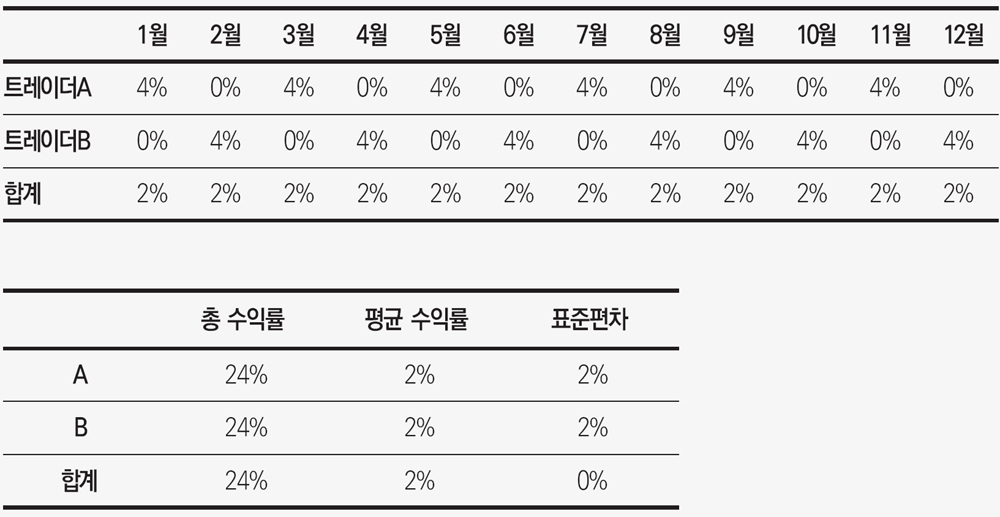

“야구에는 일반인들은 도무지 알 수 없는
‘은밀한’ 대화를 뜻하는 미국식 표현인
사인Sign이라는 것이 있다.”
• Wikipedia.com •
지금까지 네 명의 터틀이 그들에 대해 쓴 내 글의 어느 부분에 대해 소송을 제기하겠다고 으름장을 놓았다. 이들의 반응을 보면 이 책을 집필하는 과정에 얼마나 많은 굴곡이 있었는지 알 수 있을 것이다. 이 책을 준비해온 지난 몇 개월 동안에도 그랬듯, 작품에 대한 평이 좋으면 작가는 늘 만족스럽기 마련이다. 그렇지만 내가 보기엔 이 책을 출간하기까지 겪은 과정이 터틀을 주제로 한 이야기 중 가장 흥미로운 부분일 듯싶다. 월가는 대중이 숭배할 수 있는, 떼돈을 버는 신 같은 존재를 만들어내는 것을 좋아한다. 이런 신과 같은 트레이더들은 정말 숭배할 만하기도 하지만 그렇지 못하기도 한다. 그럴 자격이 있는 사람과 그렇지 못한 이를 가르는 일은 집필 과정에 재미를 더 했다. 터틀에 대한 리서치가 끝날 무렵 흥미로운 일이 벌어졌다. 터틀 스토리를 책으로 펴내는 일을 막기 위해 냉전시대에나 있을 법한 온갖 CIA식 공작을 벌인 터틀이 있는가 하면, 내막을 자세히 알려주면서 퍼트려주기를 바라는 터틀이 나타났던 것이다.
뒷이야기를 재미있어하는 사람들은 많다. 이 책의 초안이 나왔을 때 어느 한 사람이 정말 공감을 불러일으키는 피드백을 줬다. 노련한 트레이더인 밥 파도Bob Pardo는 약점을 찾아내기 위해 책을 샅샅이 뒤지는 스타일의 사람이다.
밥 파도는 내게 여러 날카로운 질문을 던졌다. 그는 몇몇 터틀이 리처드 데니스가 내막을 밝히지 않기를 바라는 데에는 그럴 만한 사정이 있기 때문이라고 주장했다. 아울러 리처드 데니스의 자산운용 비즈니스 실패 사례에서 어떤 교훈을 얻을 수 있는지 살펴봐야 한다고 했다. 더욱이 자기들의 이야기를 책으로 쓰는 것에 대해 근거 없이 의심하는 터틀에 대해서는 더욱더 자세히 캐봐야 한다고도 했다.
뒤이은 전화 통화에서 그가 제안한 내용을 초안의 후기에 적었지만 너무 민감한 사안이어서 출판사에서 결국 제외하기로 결정했다는 말을 그에게 전했다. 돌이켜보건대 이는 잘못된 결정이었다. 지금까지도 진실을 왜곡하는 터틀들이 있음을 생각해보면 더욱더 강하게 싸워 알려지지 않은 이야기를 캐냈어야 했다.
하지만 막후 사정을 파헤쳐 글로 옮기는 데에는 장단점이 있다. 이 드라마보다 더한 스토리가 사소하고 하찮게 보이지 않을까? 아니면 터틀 중 승자와 패자를 명확히 구분함으로써 인간의 나약함을 적나라하게 보여줄 수도 있지 않았을까?
신비에 싸인 터틀 전설이 20년 넘게 이어져온 상황에서, 장막을 걷어 빛이 들어오도록 하면 실제 터틀식 수련과 성공을 경험하지 못한 투자자들이 터틀도 인간임을 깨닫는 데 도움이 될 것이라는 내 생각이다. 원조 터틀이 트레이딩 기법을 터득할 수 있다면 길거리에서 뽑힌 사람들도 얼마든 배울 수 있다. 터틀이 터득한 트레이딩 기법은 중요하다. 더욱이 이 가운데 몇 명은 정말 똑똑하다. 하지만 1983년부터 2008년까지의 성과를 보면 인간적 요소의 작용도 무시할 수 없다. 많은 내부 토의를 거쳐 양장본 초판 이후 발행된 페이퍼백 버전에는 후기를 넣기로 결론을 냈다.
터틀 스토리를 캐는 일은 할리우드 최고의 시나리오 작가도 생각해내기 어려운 복잡하게 꼬인 미로를 걷는 것과 같았다. 이것은 마치 한 발짝씩 나갈 때마다 불쑥 튀어나오는 비밀의 단서와 숨은 뜻을 찾아 미지의 세계로 계속 달리지만 살아남는다는 보장도 없는 닌텐도 마리오 브라더스3 게임과도 비슷했다.
터틀 스토리를 파헤치는 작업을 지속하던 2006년 마침내 터틀들이 태도를 바꿔 하나둘씩 입을 열기 시작했다. “필요하면 전화로” 기꺼이 인터뷰하겠다는 터틀이 있는가 하면 터틀 수련 이야기를 언제든 해주겠다는 터틀도 있었다. 질문서를 보내면 답장하겠다는 정도의 성의만 보인 터틀도 있었다. 하지만 상황이 허락할 때 말해주겠다는 이도 있었다. 어쨌든 결국 이들은 친절하면서도 명쾌하게 인터뷰해줬다. 당초의 우려는 기우인 듯 보였다. 왠지 흥미로울 듯싶었다.
리서치가 탄력을 받고 있을 때 전혀 들어보지 못한 새 터틀이 나타났다. 루돌프 파피어닉Rudolf Papirnik이었다. 리처드 데니스의 트레이딩 플로어 업무를 총괄하던 로버트 모스Robert Moss는 루돌프 파피어닉을 터틀이라 불렀다. 루돌프 파피어닉은 터틀 프로그램 전후에 걸쳐 리처드 데니스를 도운 적이 있어서 분명 ‘터틀 기법’을 알고 있었다. 잘 알려진 터틀인 짐 디마리아는 루돌프 파피어닉도 터틀이라는 로버트 모스의 주장을 뒷받침했다.
더욱이 터틀들이 입을 열기 시작하면서 리처드 데니스가 단순히 가르침을 주는 사람이 아닌 우두머리로 그려지는 것에 대해 바로 우려를 표명했다. 이들은 빌 에크하르트도 자신들의 성공에 중요한 역할을 했다는 사실이 가려지지 않게 해달라고 했다. 예를 들어 제프 고든은 다음과 같이 강조했다. “빌 에크하르트는 아주 똑똑했습니다. 그의 한마디 한마디를 모두 새겨들었죠. 저는 이 정도로 치켜세울 만한 사람을 만나본 적이 없습니다. 그에게서 늘 뭔가를 배웠어요.” 시간이 흐를수록 빌 에크하르트의 가르침이 중요했다는 터틀들의 주장이 계속 이어졌다.
빌 에크하르트의 공도 크다고 고쳐 지적한 점 이외에, ‘터틀’이라는 닉네임이 탄생한 배경에 대해서도 엇갈린 의견이 있었다. 마이크 섀넌은 리처드 데니스가 싱가포르에서 거북이 농장을 보고 이름을 지었다는 구전과는 다른 주장을 폈다. “터틀 수련 첫해에 지은 원래 명칭은 ‘디사이플스Disciples’였습니다. 이는 시카고 웨스트사이드에서 이름을 날리던 갱단 이름이었습니다. 하지만 모두 동의해 ‘터틀’로 바꿨습니다.” 맞는 얘기일까? 지금까지 누구도 이런 말을 해주지 않았다. 하지만 아무도 밝히지 않았으나 결국은 사실로 드러난 이야기를 마이크 섀넌이 많이 알려줬다. 반면, 두 여성 터틀 중 한 명인 루시 와이어트 매티넌Lucy Wyatt Mattinen은 사실 리처드 데니스가 1960년대 팝 그룹이었던 ‘더 터틀스The Turtles’를 좋아해서 터틀이라 이름 지었다고 주장했다.
이처럼 처음에는 협조도 있었고 다채로운 스토리도 새로 나왔지만 이후 내 책의 출간을 어떻게든 막으려는 시도가 점차 드러났다. 결국 터틀에 대한 객관적 이야기가 공개되는 것을 꺼리는 터틀이 여럿 있다는 사실이 분명해졌다.
터틀과 리처드 데니스 사이에 맺은 비밀유지 약정에 대해서도 터틀들은 각자의 입장에 따라 스토리 공개 여부에 대해 서로 다르게 해석했다. 모든 터틀이 서명한 비밀유지 약정은 이미 만기가 지난 지 오래였고, 그 내용은 인터넷에 떠돌고 있어서 알만한 사람은 알고 있었다. 대학에서 학생을 가르치고 있는 터틀인 필립 루Philip Lu는 내가 접촉을 시도했을 때 당혹스럽게도 대놓고 거절했다. 그는 에지우드대학 이메일 계정을 통해 이런 답장을 보내왔다. “리처드 데니스와 맺은 비밀유지 약정은 여전히 유효하다는 입장입니다. 그래서 인터뷰에 응할 수 없습니다.”
브라운대학을 졸업한 필립 루는 아주 총명한 사람이다. 터틀로서 분명 수백만 달러를 벌었고 다른 여러 터틀의 존경도 받고 있는데 어처구니없는 비밀유지 약정 핑계라니? 한 터틀이 불쑥 나타나 필립 루가 제리 파커나 폴 라바와 어깨를 견줄 만하다고 주장하며 그를 옹호했다. “그는 수십억 달러를 운용할 능력이 있는데도 많은 돈을 굴리는 것을 원치 않았습니다.”
다른 터틀인 샘 드나르도는 비밀유지 약정이 여전히 유효하다는 필립 루의 주장을 확실히 존중했다. “그는 시스템이 여전히 잘 작동하고 있다고 알고 있습니다. 그리고 이 시스템을 더 많은 사람들이 사용할수록 그 효과가 떨어집니다. 그는 우리처럼 터틀 수련을 받았다는 사실에 대해 자부심이 클 것입니다.” 하지만 터틀 트레이딩 규칙이 널리 전파되면 그 효과가 떨어진다는 주장은 아직까지 입증되지 않았다.
하지만 스토리를 감추려는 사람은 필립 루만이 아니었다. 나는 리서치를 마친 뒤 여러 터틀들에게 인터뷰를 요청했다. 폴 라바는 다음 질문으로 대답을 대신했다. “제 이메일 주소는 어떻게 아셨습니까?” 그로부터 다시는 연락을 받지 못했다. “관심 없어요.”라고 딱 잘라 거절한 터틀도 있었다. 몇 개월 뒤 이 터틀은 비서를 시켜 내 인터뷰에 협조 의사를 표시한 터틀 명단을 요청했다. 인터뷰에 응하겠다고 밝힌 터틀 명단을 보내면서 그에게 다시 면담을 요청했지만 그의 대답은 “싫습니다.”였다. 그때는 몰랐지만, 그는 건네준 명단에 나온 터틀들에게 일일이 연락해 더 이상 발설하지 말라고 설득했다고 한다. 이 꼼수는 통하지도 않았을 뿐만 아니라 (인터뷰에 이미 응했는데도 더 이상 밝히지 말라는 압력을 받은) 마이클 카발로를 짜증나게 했다. 사실 마이클 카발로는 터틀 스토리를 널리 알려야 한다고 내게 말한 적이 있다.
내 인터뷰 요청에 다음과 같이 대답한 터틀도 있었다. “이 프로젝트에 저까지 감안해주셔서 감사합니다. 하지만 리처드 데니스와 윌리엄 에크하르트의 입장을 고려할 때 제가 참여하기는 어려울 것 같습니다. 하지만 전에 밝힌 대로 [누구누구] 터틀이 참가한다면 저도 함께하겠습니다. 어쨌든 훌륭한 작품이 나오리라 확신하며 행운을 빌겠습니다.” 좋은 말도 있었지만 다른 터틀 여럿이 참여해야 본인도 함께하겠다는 이상한 답변이었다. 리처드 데니스와 윌리엄 에크하르트가 어떻게 생각하는지 확인하지도 않았는데, 셋이 함께하면 이 스승들의 의견을 무시해도 좋다는 궤변이었다. 결국 터틀 수련이 있기 훨씬 전인 1970년대 초부터 리처드 데니스와 막역하게 지낸 톰 윌리스Tom Willis를 접촉할 수 있었는데 그는 내게 모든 내막을 알려주었다.
하지만 인터뷰를 거절한 몇몇 터틀은 하나같이 “리처드 데니스를 보호”한다는 애매모호한 구실을 댔다. 내게 터틀 스토리에 대해 말해준 한 터틀은 그 핑계는 “헛소리”라며 비웃었다.
이 이야기를 둘러싼 섹스, 마약, 로큰롤 등이 얽힌 복잡한 얘기들도 있다. 배경이 1970년대 후반과 1980년대 초반이니 몇몇 방탕한 터틀이 전혀 없으리라 기대하기는 어렵다. 그렇다고 모든 터틀이 그랬다는 뜻은 아니다. 이 책에 모든 스토리를 담을 수는 없었지만, 거친 삶을 보낸 터틀들도 있었다는 정도만 말해두겠다.
제리 파커
제리 파커의 사무실을 처음 보면 아주 하찮아 보일지 모르지만 내게는 ‘놀라움’ 그 자체여서 어제인 듯 아직도 생생하다.
사무실 위치를 찾아내는 일도 쉽지 않았다. 버지니아 리치몬드는 우리집에서 150킬로미터밖에 떨어져있지 않았고 사무실 주소도 있었지만 골목골목까지 안내해주는 맵 퀘스트Map Quest가 없었다. 대신 훌륭한 옛날식 AAA 지도책이 있었다. 덕분에 제리 파커 사무실이 자리한 지역까지는 무난히 갈 수 있었지만 그곳에서 두 시간을 더 헤맸다. 결국 한 지방은행 점포 앞에 차를 세우고 제리 파커의 회사, 체사피크 캐피탈에 대해 들어본 적이 있는지 물었다.
처음 만난 사람은 내 질문에 대답하지 않고 나를 뻔히 쳐다보기만 했다. 다음으로 물어본 은행 창구 직원은 체사피크가 오른쪽으로 800미터쯤 올라가면 있을 것 같다고 알려줬다. 그녀 말대로 사무실은 그곳에 있었다. 돌이켜보건대 이 여직원은 이상하게도 체사피크가 어떤 회사인지 모르면서 위치는 알고 있었다. 나이로 미루어보아 그녀의 연봉은 3만 5,000달러 정도였을 것이다(이는 전혀 이상할 것이 없다). 하지만 제리 파커는 연간 3,500만 달러를 벌어들이고 있었다. 나는 속으로 그 여직원을 잡아 흔들며 이렇게 말해주고 싶었다. “저 건너편에서 일하는 사람이 누군지 모르세요? 당장 여길 그만두고 제리 파커 회사에 인턴으로 취직해 큰돈을 버는 방법을 배우세요!”
그 여름에는 제리 파커를 만나지 못했다. 그때 본 것은 로비와 20대의 비서뿐이었다. 그를 처음 대면한 것은 약 18개월 뒤인 1995년 12월 리치몬드 교외에 있는 새 사무실에서였다. 심층 대면 인터뷰를 해달라고 계속 성가시게 굴자 마침내 비서인 조너선 크레이븐이 인터뷰 허락이라는 기쁜 소식을 전해왔다. 놀랍게도 제리 파커가 쓰는 방은 책상에 놓인 조그마한 유리 거북이 외에는 장식품이 전혀 없었다(지금은 건물 밖에 유일한 홍보물인 돌로 만든 커다란 거북이 조각상이 있다). 당시 나는 긴장하고 있었는데 놀랍게도 그도 긴장한 듯 보였다. 제리 파커가 물었다. “무엇이 가장 궁금하세요?” 나는 자세한 설명도 없이 그냥 “실행”이라고 내뱉었다. 그는 내가 브로커 세계를 궁금해한다고 잘못 받아들이고 너그럽게도 자기가 거래하는 브로커를 접촉해보라고 알려줬다.
하지만 허락된 30분간의 인터뷰가 끝나기 전 그의 눈을 똑바로 쳐다볼 기회가 있었다. 나는 그 순간을 활용해 금년 초 베어링 은행이 주관한 매매 경진대회에서 누가 우승 경품을 탔는지 물었다. 그 사람 ‘이름’을 알려달라는 내 질문에 그는 “내 사무실에서 그런 질문을 하다니 믿을 수 없군요.”라고 말하는 것 같은 표정을 지었다. 그렇지만 그의 한 단어 대답으로 그 사람 이름을 확인할 수 있었다. 그 순간 내가 추세추종에 대해 이해하고 있던 많은 것들이 더욱 확고해졌다. 그가 당시 내게 얼마나 큰 영향을 끼쳤는지 알지 못할 것이다.
얼마 뒤 제리 파커가 추천한 브로커인 마이크 커티스가 버지니아 리치몬드 외곽에 있는 자기 집으로 나를 초청했다. 그는 큰돈을 벌어 시카고 딥 사우스 지역으로 이주해 삶을 즐기고 있었다. 언젠가 그는 제리 파커가 자기의 먼 친척에게 추세추종 매매기법을 가르친 적이 있다는 사실을 말한 적이 있었다. 그가 말한 제리 파커의 먼 친척이 바로 2세대 터틀인 살렘 에이브러햄이라는 사실을 내가 알아챈 것은 몇 년이 지난 뒤였다.
그 뒤 제리 파커와는 수년간 접촉이 없었다. TurtleTrader.com이라는 웹사이트를 개설한 이후에도 오랜 시간이 지나서야 그를 만날 수 있었다. 이번에는 제리 파커와 그의 2인자 존 호드John Hoade, 마케팅 담당 케이스 바이어스Keith Byers, IT 전문가 등과 대회의실에서 함께 만났다. 휑해 보이는 회의실만 봐서는 체사피크 캐피탈이 무슨 일을 하는 회사인지 알 수 없을 듯했다. 장식품이라고는 벽에 기대어 놓인 커다란 스위스 알펜호른뿐이었는데, 여기에는 어느 스위스 회사가 새겨넣은 문구가 있었다. 제리 파커와 체사피크 캐피탈에게 감사를 표하는 그 문구만이 체사피크 캐피탈이 전 세계적으로 거래한다는 사실을 말해주고 있었다.
왜 세월이 한참 지나 이 두 번째 미팅을 했을까? 당시 체사피크 캐피탈은 10억 달러를 운용하는 큰 회사였지만 이곳 전문가들은 새로운 마케팅 아이디어를 찾고 있었다. 즉, 인터넷으로 비즈니스를 촉진하는 방법과 이를 효과적으로 활용하는 방안을 모색하고 있었다. 그 회의는 이들에게 생각할 거리를 제대로 준 듯했다. 곧 제리 파커가 내가 보유한 trendfollowing.com이라는 도메인을 사려했기 때문이다(사실 그는 trendfollowing.net과 trend-following.com이라는 두 도메인을 사서 2008년 7월 현재까지 보유하고 있다). 이 도메인을 팔지 않은 것은 현명한 결정이었다. 이 도메인 이름은 4년 뒤 내 첫 책인 《추세추종Trend Following》을 쓰는 데 촉매가 되었기 때문이다.
오늘날 제리 파커의 체사피크 캐피탈의 온라인 인지도는 여전히 낮다. 하지만 낮은 인지도가 그의 성공에 걸림돌이 되지는 않는다. 여전히 제리 파커는 터틀 가운데 가장 크게 성공한 사람이기 때문이다. 흥미롭게도 2007년 가을 《터틀 트레이딩》이 출간된 뒤 서로 다시 연락할 기회가 있었다. 그때 나는 그에게 다큐멘터리를 찍는 데 참여해달라고 부탁했다(트레이딩 업계의 여러 전문가와 노벨상을 받은 두 명을 다룬 내용이었다). 그는 정중히 거절했다. 다큐멘터리 내용이 마음에 들지 않아서가 아니라 사생활이 드러나는 것을 꺼리는 스타일이었기 때문이다.
리즈 체블과 루시 와이어트
여성 터틀은 두 명이었다. 이 책이 출간되기 전까지만 해도 사람들은 여성 터틀은 리즈 체블뿐이라고 알고 있었기 때문에 이는 많은 사람들에게 뉴스거리였다. 그러나 취재 결과, 루시 와이어트 매티넌도 터틀이었다. 다른 여러 터틀이 이 사실을 확인해주었다. 더 자세한 뒷이야기가 있는데 이는 우선 리즈 체블로부터 시작된다.
리즈 체블은 이 책을 쓰기 위한 내 인터뷰 요청에 다른 중요한 일이 있다며 정중히 거절했다. 그로부터 3주 뒤 사전에 반대 의견 표명이나 접촉도 없이, 본인에 대한 언급이 있으면 법적으로 대응하겠다는 메시지를 불쑥 전해왔다. 그녀는 자신이 신문이나 잡지에 거론되는 트레이딩 업계의 유명인사라도 된다고 생각해 터틀에 대한 스토리에서 자신을 제외시켜 달라는 것이었까? 분명히 그랬다.
얼마 뒤 내 책상에 놓인 신문에서 리즈 체블이 시카고에서 진행되는 매니지드 퓨처스 협회Managed Futures Association 컨퍼런스에서 연사로 나온다는 기사를 볼 수 있었다. 그녀는 인터뷰를 거절했지만, 이곳으로 직접 찾아가 이런저런 설명으로 안심시키면 인터뷰 허락을 받을 수도 있겠다 싶었다. 망토처럼 보이는 검은색 옷차림의 리즈 체블은 아주 유창하고 자신 있게 연설했다. 그날 시카고 오찬 세미나에서 그녀는 프레젠테이션을 두 파트로 나눠 진행했다.
1. 투자심리: 감정의 기복
2. 수학적 솔루션
터틀을 아는 사람들이라면 이 중요한 두 주제가 낯설지 않을 것이다. 기조연설을 하는 동안 리즈 체블은 ‘상관관계’라는 논제도 꺼냈다. ‘완벽한 역의 상관관계’를 보이는 트레이더 A와 B를 예로 든 표를 보여줬다.

리즈 체블이 한 프레젠테이션의 논거는 리처드 데니스와 함께했던 시절에서 배운 것이다. 모든 트레이더는 포트폴리오 구성 요소들이 서로 최대한 음의 상관관계를 지니도록 해야 한다. 포트폴리오가 플러스 수익률을 기록하는 상태에서 상관관계가 음인 구성 요소를 추가할수록 위험이라 불리는 표준편차가 줄어든다.
리즈 체블의 연설은 내가 터틀에 대해 밝힌 내용, 즉 훈련 내용과 신념 등에 대해 더욱 강한 확신을 심어주었다. 하지만 강연이 끝난 뒤 그녀에게 가까이 갈 수 없었다. 인터뷰를 허락하지 않은 이유가 무엇일까? 그녀는 TurtleTrader.com의 팬이 결코 아니었다. 리즈 체블은 터틀과 관련이 있는 누군가가 ‘터틀’이라는 단어를 이용해 돈벌이를 하는 행위를 싫어했을 수도 있다(사실 이 논리라면 미디어업계 종사자나 전기 작가는 어느 분야에 대해서든 아무 얘기도 할 수 없게 된다). 터틀에 대한 내 이야기는 최근 수년간 반응이 아주 좋았기 때문에 그녀의 거부 의사는 도저히 납득할 수 없었다.
그렇게 거절한 데에는 그럴 만한 이유가 몇 가지 있는 듯하다. 그녀가 터틀 수련 첫해 기록한 -20.98퍼센트라는 수익률은 최근 성적표에는 나와있지 않다. 제프 고든과 인터뷰를 하면서 이 누락을 발견했다. 1988년 리즈 체블이 고객 자금을 운용하기 시작할 때 제시한 자료는 마이너스를 기록한 첫해 실적이 아닌, 51.56퍼센트의 수익을 올린 1985년 성과였다.
하지만 저술을 위한 리서치가 끝날 무렵 출간을 저지하려는 리즈 체블의 움직임은 더욱 심해졌다. 2006년 가을 뉴욕의 재즈 음악 프로듀서 찰스 칼리니Charles Carlini가 (내가 터틀에 대한 책을 쓰는 줄 모르고) 터틀 다큐멘터리 관련 아이디어를 얻고자 나를 찾아왔다. 그는 흥분해있었다. 리즈 체블과 접촉했는데 그녀가 모든 터틀을 연결해주겠다고 약속했기 때문이다. 모든 터틀을 연결해주겠다고? 결코 그런 일은 없을 터였다.
찰스 칼리니는 터틀에 대한 자세한 내막을 모르고 있었고 리즈 체블이 내 터틀 책에 대해 거부감을 보이고 있는 상황에서, 그의 다큐멘터리는 내 책보다 더 빨리 나올 듯 보였다. 도대체 리즈 체블이 터틀에 대해 객관적으로 쓴 내 책을 싫어하는 까닭은 무엇일까? 어쨌든 내 책을 능가하는 것을 만들 수 있는 사람들과의 경쟁은 불 보듯 뻔했다. 나는 압박을 느꼈다.
한 터틀은 리즈 체블의 행동을 ‘멍청이들의 음모’를 다루었던 드라마 같다고 비꼬았다. 그렇지만 나는 리즈 체블과 불편한 관계를 유지하고 싶지 않아 그녀를 안심시키려고 마지막까지 성의를 다했다. 요약하자면 나는 그녀에게 나쁜 감정이 없었다. 하지만 겉으로는 친절해 보이는 그녀의 이메일 답장은 의심스러웠다. 답장을 받자마자 떠오른 생각은? “트로이 목마”였다.
“귀하께서 TurtleTrader.com 웹사이트를 처음 만든 분 맞습니까? 저는 이 웹사이트가 지난 세월 동안 많이 발전했다고 생각합니다. 내용도 알차다고 판단됩니다. 하지만 귀하께서 이 웹사이트를 처음 창설하셨는지는 잘 모르겠습니다. 만약 그러시다면 러셀 샌즈나 다른 터틀 연락처를 가지고 계시리라 생각하는데 맞습니까? 리처드 데니스 씨께서 제게 터틀 명단을 구해 달라고 부탁했는데, 귀하께서는 저보다 이들에 대한 더 정확한 정보를 가지고 계시리라 판단됩니다. 터틀에 대한 이메일 주소나 다른 정보를 최대한 많이 보내주시면 대단히 고맙겠습니다.”
리즈 체블이 호의적이어서 다행이긴 했지만, 내가 인터뷰한 터틀 명단이 책 출간을 지연시키는 데 이용될 수 있다면 다시는 다른 터틀에게 줘서는 안 되겠다고 판단했다. 그렇지만 2007년 10월 내 책이 출간되었을 때 리즈 체블이 부정적 반응을 보인 이유가 또 있었다. 다른 여성 터틀인 루시 와이어트 매티넌 때문이었다.
여성 터틀이 두 명이라는 나의 발표 뒤 바로 폭풍이 몰아칠 줄은 몰랐다. 내 책 내용대로 터틀에 대해 다룬 〈월간 트레이더Trader Monthly〉 2007년 12월호에 실린 내 기고문에 여성 터틀이 둘이라는 내용이 있었다. 이 월간지는 리즈 체블에 대한 내 기고문 내용을 확인할 무렵 리즈 체블로부터 여자 터틀은 오직 자기뿐이라는 연락을 받았다. 하지만 이 잡지는 내 기사에 ‘여성들’이라는 단어가 있다는 사실을 근거로 여자 터틀이 둘이라는 주장을 굽히지 않았다.
책이 출간되기 전 루시 와이어트 매티넌와 인터뷰한 적이 없었는데도 책이 나오자 그녀가 내게 전화를 걸어왔다. 책 내용 중 다른 터틀이 자기를 사무실에서 ‘손톱 손질이나 하는’ 여자로 묘사한 데에 격분했다(다른 기사에서는 내가 손톱관리사라는 표현을 썼는데 이는 잘못이었다). 루시 와이어트 매티넌은 자기는 그런 모습을 보이지 않았다고 강력히 부인했다. 얼마 뒤인 2008년 4월 12일 우리는 직접 만나기로 했다. 이 만남으로 터틀 실험을 시작하게 된 배경에 대해 더욱 자세히 알 수 있었고, 그녀가 터틀 탄생에 얼마나 중요한 역할을 했는지 확인할 수 있었다.
세계 최초의 펑크댄스 클럽이라 불리는 라 미어 바이퍼가 1977년 시카고 할스테드 거리에 처음 문을 열었다. 하지만 1978년 이 클럽은 화재로 사라졌다. 루시 와이어트 매티넌이 리처드 데니스와 그의 형제 트레이더 톰 데니스를 처음 만난 곳도 이 클럽이었다. 그녀와 톰 데니스가 만나지 않았더라면 터틀 실험은 탄생하지 않았을 가능성이 매우 크다(이 만남이 없었다면 적어도 그날 섹스 피스톨즈Sex Pistols 그룹의 조니 로튼Johnny Rotten이 〈갓 세이브 더 퀸God Save the Queen〉이라는 노래를 열창하지도 않았을 것이다).
루시 와이어트 매티넌은 톰 데니스, 리처드 데니스와 친구가 된 뒤 리처드 데니스와 어릴 적부터 친구로 지내온 윌리엄 에크하르트를 만났다. 이후 이 둘은 서로 사귀다 헤어지기를 되풀이했다. 그러다가 터틀 실험이 정식 출범하기 전 윌리엄 에크하르트가 그녀에게 트레이딩을 가르쳤다. 그 덕에 그녀는 20대 초반이던 1980년대 초, 수십만 달러를 벌 수 있었다. 루시 와이어트 매티넌은 윌리엄 에크하르트가 그녀가 성공한 이유는 ‘여자의 직감’ 덕분이라며 리처드 데니스를 놀렸다고 털어놓았다. 물론 리처드 데니스는 터틀 실험을 하게 된 근본 배경인 선천적 능력을 결코 믿지 않았다. 그로부터 몇 년 뒤 터틀이 모집되었고 루시 와이어트 매티넌도 원조 터틀로서 터틀 실험실에 합류했다.
곁들이자면 2008년 리즈 체블이라는 이름을 다시 접하게 되었는데, 틀림없이 그녀는 《터틀 트레이딩》에 대해 호의적으로 돌아선 듯하다. 구글에서 내 이름, 마이클 코벨을 검색할 때마다 그녀 회사 광고가 뜨도록 적극 홍보하고 있었기 때문이다.
지리 스보보다
책을 위한 리서치를 하는 동안 루시 와이어트 매티넌 외에 내가 접촉할 수 없었던 또 다른 터틀은 지리 조지 스보보다였다. 지금 그는 라틴음악에서 전자음악과 군악까지 온갖 종류의 음악을 다루는 재주가 뛰어난 기타리스트로 활동하고 있다. 그는 현재 마이스페이스닷컴에서 찾을 수 있는 유일한 원조 터틀이기도 하다. 그가 여전히 매매를 하고 있을까? 다른 터틀인 톰 생크스는 그가 1988년 이후 거둔 수익률은 터틀 중 최고일 것이라 말했다. 하지만 잠깐 수익률 얘기를 접어두고 그의 온라인 뮤직비디오를 보면 정말 환상적이다.
그가 동료와 샌디에이고주립대학에서 연주하는 유튜브 동영상을 보다 보면, 그 순간 교정을 거니는 학생들 중 이 기타 연주자가 대학의 모든 금융학과 교수들이 벌어들이는 돈을 합한 금액보다 더 많이 번다는 사실을 아는 사람이 몇이나 될까 하는 의문이 든다.
리서치 시작부터 끝까지 지리 스보보다를 인터뷰할 방법이 전혀 없었다. 하지만 정말 운 좋게도 (터틀 실험이 끝나고 10년 뒤) 그와 함께 일했던 한 사람이 우연히 내게 이메일로 연락해왔다.
그는 지리 스보보다를 위해 일할 때 원래의 터틀 시스템과 아주 비슷한 프로그램 두 개를 돌렸다고 밝혔다. 하나는 매매 기간이 아주 짧았고 다른 하나는 덜 짧은 시스템이었다. 여러 시뮬레이션을 한 뒤 변수 몇 개를 약간 조정했지만 기본적 트레이딩 규칙은 원래 터틀 시스템과 같았다. 그가 지리 스보보의 회사에서 근무할 때 매매는 태평양 표준시로 저녁 일곱 시에 시작했다. 홍콩과 호주 시장을 대상으로 트레이딩했는데 다음 날 주문을 오후 다섯 시 전까지 준비해야 했기 때문이었다.
“우리는 그날의 숫자를 프로그램에 입력하고 15분 뒤 다음 날 매매를 준비했습니다. 지리 스보보다와 그의 파트너들은 제가 트레이딩 비법을 알게 될까 봐 아주 경계했습니다. 이들은 서로 똘똘 뭉쳤고 자신들의 비법을 아주 소중히 여겼죠. 혹시나 나쁜 평을 듣거나 개인적 자유가 침해당할까 봐 걱정하기도 했습니다.”
분명 많은 외부인들이 터틀들의 비밀유지 노력과 피해망상적 우려를 경험했을 테지만, 내가 접한 훨씬 더 특이한 사례는 가장 젊은 터틀에게서 겪은 것이었다.
커티스 페이스
2001년 버진 아일랜드로 떠난 비즈니스 여행에서 커티스 페이스를 처음 만났다. 나는 리처드 데니스가 훈련한 유명한 터틀 한 명을 만날 수 있는 기회가 반가웠다. 그는 세인트 토머스 섬에 있는 프렌치맨스 리프 매리엇Frenchman's Reef Marriott 호텔로 와서 구식 소형 렌탈 승용차 뒷자리에 나를 태우고 얘기를 나눌 만한 해변으로 데려갔다.
첫인상은 어땠을까? 카리브 해에 있는 세인트 토머스 섬은 끊임없는 스틸 드럼 소리가 들려오는 편안한 분위기의 섬이다. 그런데 이상하게도 커티스 페이스를 만나자마자 그가 열등감이 있다는 느낌이 들었다. 하지만 그도 터틀이었고 이 업계에서 겉만 보고 평가하는 행위는 현명치 않다고 생각했다. 당시 그는 마흔 살 정도였지만 실제보다 더 늙어 보였다(지쳐 보인다는 표현이 더욱 적절한 듯싶다).
그를 만난 지 얼마 지나지 않아 대화 주제가 에인 랜즈의 소설 《아틀라스Atlas Shrugged》로 이어졌다. 한때 그는 여러 사람들과 골트 캐피탈Galt Capital이라는 운용회사를 설립할 생각으로 논의까지 했다고 밝혔다. 동업자 중 한 친구는 1,200쪽 고전을 단 몇 시간 만에 읽는다고도 했다. 우스꽝스러운 과장이라고 생각했지만 그는 정말 진지했다. 얼마 뒤 그는 새로운 항공사를 설립할 계획이라고 했다(당시 그는 curtis@galtair.com이라는 이메일 주소를 쓰고 있었다). 나는 속으로 ‘결코 그럴 리 없다’고 생각했지만 터틀 출신인 그가 정말로 ‘골트 에어Galt Air’ 라는 항공사를 세우지 말라는 법도 없었다.
그날 밤 저녁식사 자리에서 커티스 페이스는 TurtleTrader.com 웹사이트에 대한 칭찬을 아끼지 않았다. “어떻게 준비했는지는 잘 모르겠지만 제대로 만들었다고 생각합니다.” 하지만 누가 봐도 엄청나게 성공했다고 인정하는 제리 파커와 했던 인터뷰와는 분명 다른 느낌이었다. 나중에 구글 검색 도중 그의 이력서가 인터넷에 돌고 있음을 알 수 있었다. 가장 성공한 터틀이라 자평하던 그 유명한 터틀이 일자리를 구한다고? 확실한 증거는 없었지만 그가 재산을 모으지 못했다는 생각이 불쑥 들었다. 커티스 페이스는 모든 터틀이 ‘크게 성공했다’는 전설에 완전히 상충되는 사람이었다.
알고 보니 주변에서 많은 사람들이 달라붙어 그의 명성을 이런저런 사업에 이용하려 했음이 드러났다. 내게 솔직히 털어놓기 시작한 몇몇 사람들은 커티스 페이스가 돈에 쪼들리고 있음을 확인해줬다.
몇 차례 더 만나고 그 후로는 더 이상 접촉이 없었다. 하지만 그는 곧 내가 공들이는 일에 반하는 행위를 했다. 2003년 그가 내 웹사이트를 공개적으로 폄하했다. “TurtleTrader.com을 운영하는 사람으로부터 전문적인 조언을 기대할 수 없다. 훌륭한 트레이딩 경험에 의해 담금질되지 않은 일반 트레이더의 보잘것없는 조언만 얻을 수 있을 뿐이다. 이곳에서 정보를 얻겠다고 이용료를 내는 행위는 장님을 안내인으로 고용하는 꼴이다.”
2007년 10월 《터틀 트레이딩》이 출간되자 모든 터틀 가운데 오직 커티스 페이스만 몹시 화를 냈다. 그는 자신이 쓴 책에서 자신을 엄청나게 성공했다고 과장했던 터라 분명 자신에 대한 전설을 보호할 필요가 있었던 것이다. “내 생각에 (마이클 코벨은) 인류에 뭔가 공헌하는 대신 다른 사람의 업적과 노력에 빌붙어 사는 기생충이다.”
프리아푸스 막시무스Priapus Maximus라는 닉네임을 쓰는 사람(아마 커티스 페이스인 듯하다)이 공격을 이어갔다. “마이크가 최근에 낸 《추세추종》은 자신의 형편없는 트레이딩 코스를 홍보하는 안내 책자에 불과하다. 어느 책이 더 좋은지는 불 보듯 뻔하다. 마이크는 커티스 페이스가 미울 것이다.”
우스꽝스러운 일은 이뿐만이 아니다. 12장에서 다룬 얘기지만 터틀 실험 20년 뒤에 커티스 페이스가 시작한 트레이딩 회사는 처참하게 끝을 맺었다. 이 회사에 대한 정부 당국의 조사 과정에 필요한 쓸데없는 절차 때문에 책을 위한 자료 취합이 고통스러울 정도로 늦어졌다. 실제 내 책이 인쇄되기 시작한 2007년 초까지도 모든 세부자료가 수집되지 못했다. 하지만 책이 출간된 직후 정부는 마침내, 커티스 페이스가 공동 설립했던(이 회사 이름은 엑셀러레이션 캐피탈이었다) 그 작은 트레이딩 회사에 대한 최종 조사 보고서를 냈다.
작가라면 “사실은 허구보다 더 기묘하다.” 라는 격언이 맞는 말임을 바로 알 것이다. 하지만 미 정부의 조사 과정에서 엑셀러레이션 캐피탈이, 신망 받는 돈치안Donchian의 추세추종 시스템을 하나도 바꾸지 않고 그대로 썼음이 드러났을 때 협잡을 제대로 밝혀냈다는 느낌이 들었다.
엑셀러레이션 캐피탈은 커티스 페이스의 터틀 트레이딩 ‘전설’을 토대로 설립했다는 점을 내세웠지만 파트너였던 유리 플리암은 커티스 페이스가 트레이딩 시스템에 특별히 가치를 덧붙인 것이 없다고 진술했다. 더욱이 직원이었던 토비 데니스턴(12장 참조)은 회사 돈을 횡령해 자동차를 구입하고 여행을 다녔으며, 위우회술도 하고 남자친구에게 온갖 선물을 사주었으며 심지어 바비 인형까지 수집했다.
(내가 정보 공개를 신청하지 않았다면 영원히 묻힐 뻔했던) 바비 인형 수집 스토리까지 담긴 요지경 같은 진술 내용은, 자신이 가장 성공한 터틀이라는 커티스 페이스의 주장이 얼마나 터무니없는지를 보여주는 수많은 증거 중의 하나에 불과하다. 사실이 드러나자 그는 “마이클 코벨은 트레이딩에 대해서는 일자무식”이라며 온갖 비난을 서슴지 않았다. 인터넷에서는 “멍청이 사기꾼”이라 욕하기도 했다. 심지어 소송하겠다며 다음과 같이 으름장을 놓기도 했다.
“마이클 코벨은 화가 나고 눈이 멀어 세상에는 정직한 사기꾼들이 있을 수 있다고 착각하는 모양이다. 더욱이 나처럼 성공한 사람이 더 많은 돈을 벌 수 있는 트레이딩을 그만둔 이유를 헤아리지도 못한다. 법원은 그가 악의와 질투심에 불타는 거짓말쟁이라는 사실을 밝혀낼 것이다. …… 그는 운 좋게도 어느 영국 잡지에 자신의 주장을 밝혔다. 하지만 나는 이를 근거로 그를 명예훼손으로 고소할 수 있다. 영국은 왕족에 대해 거짓말을 지어내는 사람들을 싫어하기 때문에 명예훼손에 대해서는 아주 엄격하다. …… 소송 뒤에는 마이클 코벨에 대해서 더 이상 신경 쓸 필요가 없다. …… 그의 멍청이짓을 그만두게 하려고 수없이 노력했는데도 그는 끝내 멈추지 않았고 어리석게도 내 철천지원수가 되었다. …… 바보짓을 계속할수록 자신이 악의적이었음이 더 드러날 뿐이다. 터무니없는 소리를 지껄일 때마다 징벌적 손해배상금은 늘어날 것이다.”
커티스 페이스는 소송 논거를 이렇게 제시했다. “마이클 코벨을 상대로 승소해 받은 돈 전부를 가난과 질병, 대체 에너지 관련 비영리단체에 기부하겠다.”
2008년 봄 커티스 페이스의 어릴 적 친구인 팀 아놀드Tim Arnold가 목소리를 높였다. 그는 무엇보다도 커티스 페이스가 여호와의 증인 교도라는 사실을 확인해주었다. 두 사람은 작은 소트프웨어 회사를 함께 차렸지만 이후 팀 아놀드가 커티스 페이스 지분을 모두 인수했다. 하지만 커티스 페이스는 계약금보다 더 많은 돈을 받아낼 목적으로 인터넷 포럼에서 소송을 제기할 수도 있다는 글을 올리며 으름장을 놓았다. 팀 아놀드와 대화해보면 그가 커티스 페이스에게 아주 화가 났다는 것을 알 수 있다. 팀 아놀드는 커티스 페이스가 25년 전의 명성에 매달려 살고 있지만 지금은 쪼들리고 있다고 확인해주었다.
커티스 페이스 스토리는 밴텀 수탉을 보면서 자란 내 어린 시절을 생각나게 한다. 이 수탉들은 우월함을 드러내려고 닭장 안에서 으스대며 다른 닭을 겁주고 괴롭히지만 “부우”하고 소리치며 쫓으면 얼른 도망친다.
터틀 수련생 출신이 어떻게 이처럼 얼간이 같은 행동을 할 수 있단 말인가? 커티스 페이스는 자신이 가장 성공한 터틀이라고 오래전부터 밝혀왔다. 하지만 사실은 그 정반대다. 더 문제가 되는 것은 투자자들이 그의 말을 곧이곧대로 듣고 그를 모범으로 삼는다면 목적지도 없이 헤매는 신세가 될 것이라는 점이다.
최근 커티스 페이스는 버락 오바마Barack Obama의 대통령 선거운동에 자원했다. 그리고 2007년 12월 이와 관련한 유튜브 동영상을 올렸다. 작동 중인 세탁기 같은 것이 보이는 뒤뜰에서, 어떻게 하면 대통령으로 당선될 수 있는지에 대해 4분 동안 연설하는 내용이었다. 누가 봐도 선거 캠페인과는 실질적 관계가 없다는 사실을 알 수 있었다. 버락 오바마를 포함해 수많은 사람들이 그의 한마디 한마디에 귀 기울인다고 착각하는 듯 기괴하고 거만한 말투였다.
결론
2007년 10월 《터틀 트레이딩》이 처음 출간되었을 때 싱가포르를 제외하고는 톱10 베스트셀러에 든 곳이 없었다. 하지만 출간 직후 무슨 이유에서인지 싱가포르에서 논픽션 부문 톱10에 이름을 올렸다. 이후 13주 동안 톱10을 유지하며 《앨런 그린스펀Alan Greenspan》이나 《테레사 수녀Mother Teresa》 같은 책들과 어깨를 나란히 했다. 이는 이런 이야기에 끌리는 사람이 누구이고 그렇지 않은 이가 누구인지를 알려주는 놀라운 경험이었다. 싱가포르가 엄청난 부를 쌓고 자산운용으로 성공을 거둔 사실을 생각하면 어쩌면 당연한 일일 수도 있다.
최근 몇 년 동안 극심한 부침을 보인 중국시장에서 수백만 명의 투자자들이 터틀 철학을 활용할 수도 있었을 것이다. 중국 주식시장 폭락을 다룬 2008년 5월의 〈워싱턴 포스트Washington Post〉 기사를 살펴보라.
“지난 2월, 청두시에서 일하던 스물다섯의 엔지니어 이씨가 7층 빌딩에서 투신했다. 회사는 그가 주식시장에서 큰돈을 잃었다고 밝혔다. 3월 30일에는 산둥에서 아이스크림 가게를 운영하던 서른아홉살의 이씨가 4,500달러를 투자한 뒤 3분의 1을 잃고 아파트에서 뛰어내렸다. 중국 주식시장이 6개월 넘게 추락하자 중국 정부는 개인투자자가 전혀 예상치 못한 엉뚱한 방식으로 대응했다. 계속 방관만 하다 상하이종합지수가 상징적 마지노선인 50퍼센트 넘게 폭락한 지난 주에야 개입했다. 증권거래세를 대폭 내리고 정규시간에 블록매매를 하도록 함으로써 시장을 14퍼센트 끌어올렸다. 하지만 다시 주저앉았다.”
분명 이 투자자들은 터틀이나 터틀의 투자기법을 알지 못했을 것이다. 터틀 ‘비법’을 꼭꼭 숨기려고 온갖 노력을 기울이는 몇몇 터틀이 있지만 이들은 큰 그림을 보지 못하는 것이 아닌가 하는 의구심이 든다. 터틀의 위대하고 통찰력 있는 이야기와 엄청난 성공은 숨길 이유가 전혀 없다. 이 스토리를 널리 퍼트리면 그들뿐만 아니라 모두에게 이롭다.
터틀 스토리를 접하는 사람이 많아서 손해 볼 것이 도대체 무엇이란 말인가? 예컨대 자신의 이름을 드러내고 트레이딩을 하는 몇몇 터틀은 주식시장이 혼돈에 빠진 2008년 첫 3개월 동안 다음과 같은 실적을 올렸다.
제리 파커: +11퍼센트
리즈 체블: +17퍼센트
톰 생크스: +37퍼센트
폴 라바: +13퍼센트
하워드 세이들러: +28퍼센트
빌 에크하르트(리처드 데니스의 옛 파트너): +14퍼센트
살렘 에이브러햄(2세대 터틀): +13퍼센트
터틀 스타일의 수익률은 어느 정도 부침이 따르기 때문에 위와 같은 실적이 계속 이어지리라는 보장은 없다. 하지만 숫자는 숫자다. 더욱이 이 실적은 온종일, 그리고 일주일 내내 떠들어대는 한밤의 뉴스나 CBNC만 봐서는 기대할 수 없는 성과다.
터틀 스토리는 정말로 완벽에 가까운 트레이더들에 대한 이야기라 할 수 있다. 도무지 믿을 수 없다고 여기는 사람들도 있을 정도다. 명백한 사실을 받아들이기를 거부하면 더욱 많은 투자자들이 건전한 투자행위를 익히는 데 가장 큰 걸림돌로 작용할 수 있다. 왜일까? 사람들은 사실을 제대로 인식하는 데 늘 어려움을 겪기 때문이다. 즉, 우리는 믿고 싶은 것만 믿는다.